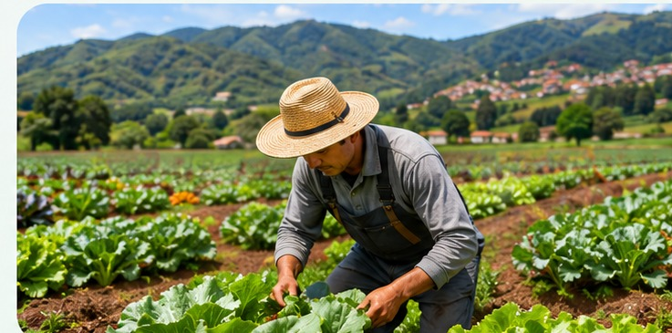
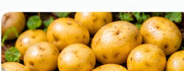
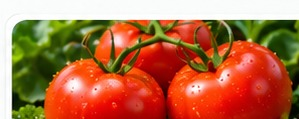
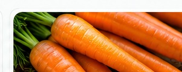
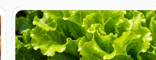

Productos locales
Apoya a productores de
Soacha y Sibaté.
Productos agrícolas frescos de Soacha y Sibaté,
directamente de nuestros productores locales.

Apoya a productores de
Soacha y Sibaté.
Sin intermediarios y
con trato directo.
Consumo responsable y
desarrollo local.



